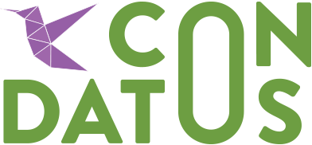
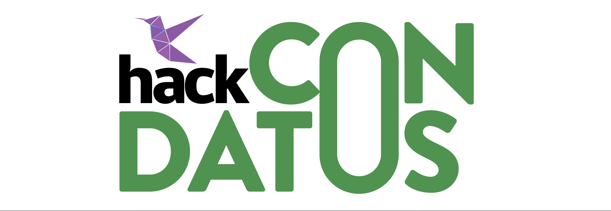

-


Temáticas
Este año, en coordinación con la 3era Conferencia Internacional de Datos Abiertos de Ottawa, la nueva reunión de ConDatos va a tomar los tres pilares y cuatro modalidades de presentación para armar su agenda.
Impacto
Iniciativas de datos abiertos que, liderando la revolución de datos, hayan sido ejecutadas o estudiadas. Se puede tratar también de propuestas de medición de impacto.
Ver másAcción
Demostraciones prácticas de herramientas, implementaciones o ejercicios prácticos para realizar colectivamente en ConDatos 2015.
Ver másImportante: Todas las personas que presenten propuestas, y todos los posible oradores, deben registrarse en este link.
Si necesitan contar con una beca para poder asistir a Condatos 2015, por favor indicarlo en ese registro.
La aceptación de las propuestas no implican la aceptación inmediata de la solicitud de la beca para participar de Condatos 2015.

Santiago de Chile
Santiago de Chile, se encuentra localizada en la Región Metropolitana y es el epicentro político y cultural de Chile. A continuación se presenta información útil para los que nos visitan de fuera:
Transporte
Hay vuelos a Santiago de Chile desde cualquier gran aeropuerto en el mundo.
El transporte entre el aeropuerto y el lugar de alojamiento correrá por cuenta de los participantes. Se recomienda utilizar los servicios de buses, transfers y taxi autorizados del Aeropuerto Internacional de Santiago Aurturo Menino Benitez.
El servicio regular de bus entre el aeropuerto lo brinda Centropuerto:www.centropuerto.cl
Existen dos empresas de tranfer oficiales:
- Transvip
- TranferDelfos
La información sobre taxis oficiales del aeropuerto puede ser consultadas : www.aeropuertosantiago.cl
Migración
La obtención de los permisos necesarios para ingresar a Chile correrá por cuenta de los participantes. A continuación les detallaremos información importante a tener en cuenta antes de viajar a Condatos 2015 Visas y documentos
Para ingresar a Chile, es necesario presentar la documentación de identificación (cédula de identidad o pasaporte) y la visa estampada (dependiendo del país de procedencia). Los ciudadanos sudamericanos, de la Unión Europea, Estados Unidos, Canadá y Australia no necesitan visado como turista
Sin embargo, algunos países deben pagar una tasa en efectivo (impuesto de reciprocidad) al llegar al aeropuerto de Chile:
Estadounidenses deben pagar una tasa de 131 dólares
Canadienses deben pagar una tasa de 132 dólares.
Australianos deben pagar una tasa de 61 dólares
Mexicanos deben pagar una tasa de 23 dólares
Albaneses deben pagar una tasa una de 30 dólares
Los turistas de la Unión Europea y los neozelandeses no deben pagar tasa al ingresar al país.
Al entrar en el país se entrega un permiso de 90 días, renovable para 90 días más. *Toda esta información figura en la web del SERNATUR chile.travel/acerca-chile/consejos-para-viajeros
Alojamiento
El Centro Cultural Gabriela Mistral (GAM) donde se desarrollará Condatos 2015 está situado en la Comuna de Santiago Centro y alrededor del mismo se encuentran muchas opciones variadas de alojamiento, desde Hoteles 5 estrellas a hostels
Restaurantes
Las Propinas no estan incluídas. Es Práctica otorgar el 10% del total del Consumo en restaurantes, dependiendo de la Calidad del Servicio.
Condatos 2015
Se llevará a cabo en el GAM, situado a metros de la Calle Lastarria donde podrán encontrar una gran variedad de restaurants y bares para todos los tipos de gustos y presupuestos
Moneda
Puedes intercambiar pesos para tu moneda local en el aeropuerto, hoteles, bancos, y en las oficinas de cambio. Para saltar este proceso también puedes ir a un cajero automático y retirar dinero con una tarjeta Visa o Mastercard. Consulta tu banco acerca de la comisión por este tipo de servicio. Normalmente vale la pena y se obtiene un tipo de cambio bastante decente.
Las tarjetas de crédito y débito son aceptadas en la mayoría de los establecimientos comerciales. Sin embargo, se recomienda portar dinero en efectivo, pues por ejemplo los taxis no aceptan ningún tipo de tarjeta.
Electricidad
La corriente eléctrica en Chile es de 220 Volts y 50 Hertz. Los adaptadores de 3 terminales eléctricos no suelen usarse, sin embargo, los convertidores de 2 terminales se pueden comprar en cualquier negocio que venda piezas eléctricas.
Mas recomendaciones
Visita la web del SERNATUR para viajeros Chile Travel
Comité Académico


HACK CONDATOS 2015

Este año el Consejo para la Transparencia en conjunto con el Ministerio Secretaría General de la Presidencia, el Programa de Naciones Unidas para el Desarrollo, la Comisión Económica para América Latina y el Caribe, y la Iniciativa Latinoamérica para los Datos Abiertos, le invita a participar en el Concurso de Reutilización de Datos Abiertos "Hackatón Regional CONDATOS 2015: Hacia el Desarrollo Sostenible", el que se desarrollará el día 9 de septiembre en el Centro GAM.
Esta instancia busca promover el desarrollo de aplicaciones en base de datos públicos teniendo un impacto a nivel regional y cuenta con 12 mil dólares en premios a repartir.
Para inscribirse: http://goo.gl/forms/7FMU5PY2Q5
Ingresar ideas: https://hackdash.org/dashboards/condatos
Mira a los ganadores 2014: http://labtransparencia.cl/ganadoresabrecl/